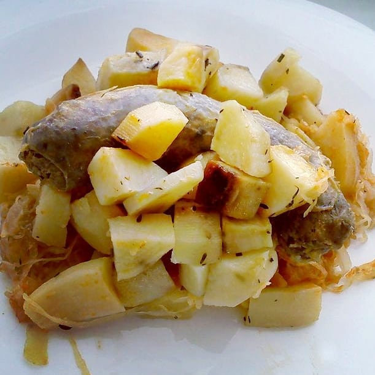

Pečené zemiaky podľa @modrakuchyna — Normy Jedál
Gazdovská pečená klobása
Potrebujeme: 1700 až 2000g zemiakov, 4 klobásky na pečenie alebo grilovanie, 800 až 1000g kvasenej kapusty, soľ, provensálske korenie, olej. Ako na to: zemiaky si ošúpeme, umyjeme a nákrájame na malé kocky. Väčší pekáč si trošku vymastíme olejom a na dno dáme všetkú kapustu. Na kapustu poukladáme klobásky. Klobásky potom zakryjeme zemiakmi, ktoré s pierkom potrieme olejom, osolíme a posypeme provensálskym korením. Zakryjeme a dáme piecť do vyhriatej rúry na 220 stupňov asi tak na cca jednu hodinu, respektíve kým sa nám neupečú zemiaky. Posledných 15 - 20 minút pečieme odokryté, nech sa nám zemiaky trošku pripečú, môžeme podávať. Viac receptov na našom webe www.kuchyna.mwb.sk
#pecenaklobasa #gazdovskaklobasa #pecenezemiaky #pecenezemiakysklobasou